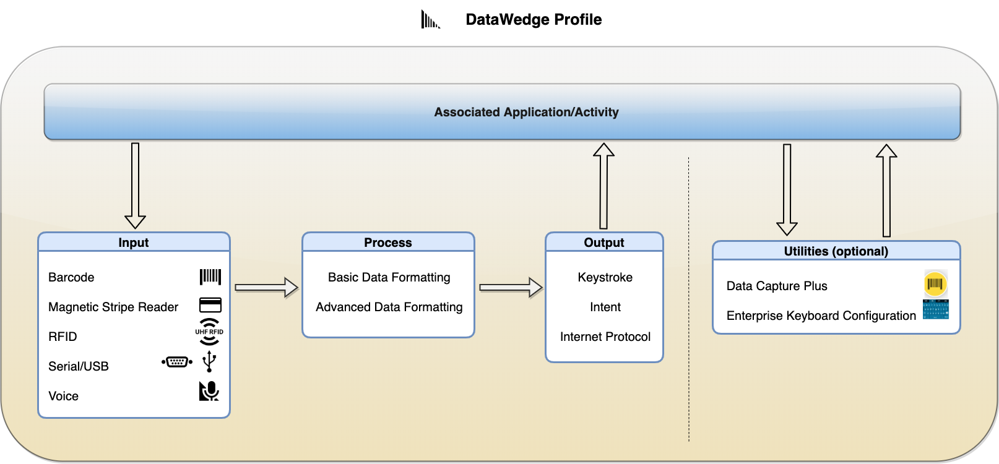

DataWedge の機能は、プロファイルに基づいています。各プロファイルには、データの取得方法 (入力)、処理方法 (データ形式)、およびアプリへの配信方法 (出力) を決定するオプション (別名プラグイン) が含まれています。1 つのプロファイルを 1 つ以上のアクティビティまたはアプリに関連付けることができます。ただし、アクティビティまたはアプリは、1 つのプロファイルにのみ関連付けることができます。入力、処理、および出力のコア機能に加えて、オプションのプロファイル固有の構成設定は、ユーティリティでカテゴリ化されており、アプリに関連付けたり、実行時に制御したりできます。入力、処理、出力、およびユーティリティの各オプションの機能および使用方法の詳細については、この後のリンクを参照してください。デフォルトでは、Profile0 が汎用プロファイルとして用意されており、これはプロファイルにまだ関連付けられていないフォアグラウンド アプリに対して有効になります。これにより、構成の設定を行う前にデータをすばやく取得できます。プロファイルの仕組みの詳細については、アーキテクチャの概要のページを参照してください。
 DataWedge プロファイルとその内容。関連付けられたアプリ/アクティビティがフォアグラウンドになっている場合は、プロファイルがロードされ、プロファイルの構成に基づいてデータを取得 (入力)、形式化 (処理)、および配信 (出力) するアクションが実行されます。Data Capture Plus とエンタープライズ キーボード構成は、アプリ/アクティビティに対して特定の機能を実行する個別のユーティリティです。Data Capture Plus により、画面の領域をスキャン トリガとして動作させることができます。エンタープライズ キーボード構成により、カスタム生成されたキーボード レイアウトを、関連付けられたアプリ/アクティビティに表示できます。
プラグインの主な構成:
| プラグイン | タイプ | メイン構成 (一部のみ表示) |
|---|---|---|
| 入力 | バーコード | ∙スキャナ選択: カメラ、1D または 2D イメージャ、Bluetooth スキャナなど ∙ ハードウェア トリガ有効化/無効化 ∙ デコーダの選択 ∙ デコーダ パラメータ (各デコーダのオプション) の設定 ∙ リーダー パラメータ (選択したスキャナのオプション) の設定 ∙スキャン パラメータ (スキャナ固有のデコード フィードバック) の設定 |
| 磁気ストライプ リーダー (MSR) | ∙ (データ出力は、インテントを介して取得され、自動的に解析されて、アプリで処理できるように特定のタグに配置されます) | |
| 無線周波数識別 (RFID) | ∙ ハードウェア トリガの有効化/無効化 ∙ リーダー設定の構成 |
|
| シリアル/USB | ∙ シリアル ポート構成の設定 | |
| 音声 | ∙ データ キャプチャ開始オプション: 開始フレーズまたは PTT ボタン ∙ データ キャプチャ開始フレーズの指定 ∙ データ キャプチャの終了フレーズの指定 ∙ データ キャプチャのタイムアウトの設定 ∙ 音声コマンドの構成 ∙ 返されるデータ タイプの構成: 英文字、数字、任意 ∙ オフライン音声認識 ∙ 確認ウィンドウ (必要に応じて編集できるようにキャプチャ データを確認) |
|
| 処理 | 基本データ形式 (BDF) | ∙ 接頭部の追加 ∙ 接尾部の追加 ∙ 16 進として送信 ∙ TAB キーの追加 ∙ ENTER キーの追加 ∙ 取得したデータを処理するための特定の基準とアクションを含むカスタム ルールの作成 |
| 高度なデータ形式 (ADF) | ∙ 取得したデータを処理するための特定の基準とアクションを含むカスタム ルールの作成 | |
| 出力 | キーストローク | ∙ 文字の代わりにアクション キーを挿入: なし、タブ、ライン フィード、キャリッジ リターン ∙ キーストロークをキー イベントとして送信 ∙ 特定のキー イベントを文字列として送信 ∙ キー イベントの遅れの設定 |
| インテント | ∙ インテント アクションの設定 ∙ インテント カテゴリの設定 ∙ インテント配信の設定 |
|
| インターネット プロトコル | ∙ リモート Wedge の有効化/無効化 ∙ プロトコルの設定: TCP または UDP ∙ IP アドレスの設定 ∙ ポート番号の設定 |
|
| ユーティリティ (オプション) | Data Capture Plus (DCP) | ∙ スキャンをトリガするボタンの位置の設定: 左、右、右または左 ∙ DCP を起動するモードの設定: ボタンのみ、全画面のみ、ボタンによる全画面への切り替え ∙ ボタン最高/最低位置の設定 ∙ 画面をタップした後にスキャナ アクションをトリガするまでの待機時間の設定 |
| エンタープライズ キーボード構成 | ∙ カスタム生成レイアウトの選択 |